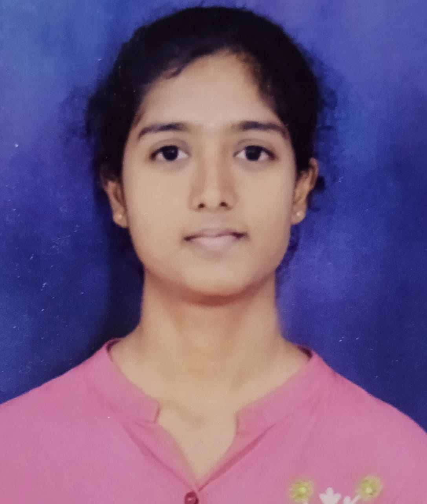

Pursing Master of Computer Application
I am motivated and detail-oriented individual with strong willingness to learn and grow professionally. I have a positive attitude,good communication skills, and the ability to adapt quickly to new environents I am eager to gain practicaal experience, enhance my skills, and contribute effictively to the organization's goals through dedication and hard work.
Based on Machine Learning
Built an vision algorthims to analyze input images and identity material types. system aims to automate recycling processes, reduce manual effort, and promote envvironmental sustainability.Developed a interactive game
Implemented core game logic including grid validation and number placement rulesDeveloped a barcode scanner system to identify products using input
Connected scanned barcode data with a product database(ID,name,price)Graphic Design-Introduction to adobe photoshop
Graphic Design-working with history panel and bridges in photoshopSimplilerarn-Introduction to Generative AI
IBM skillbuild-Artifical IntelligenceParticipated in Garuda Anveshana(treasure hunt)fest
SIT college TumkurPhone no: 9538078331
Email: tejaswinia821@gmail.com
GitHub: github.com/tejaswini925
LinkedIn: linkedin.com/in/tejaswini-a">